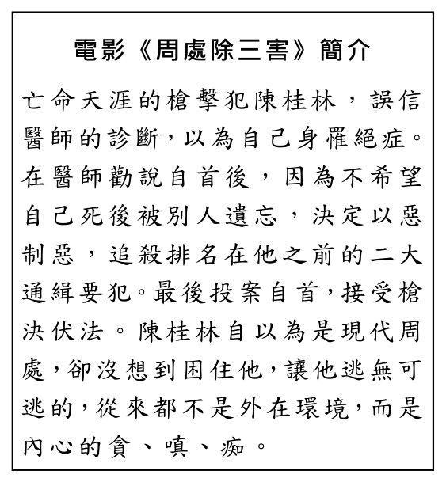
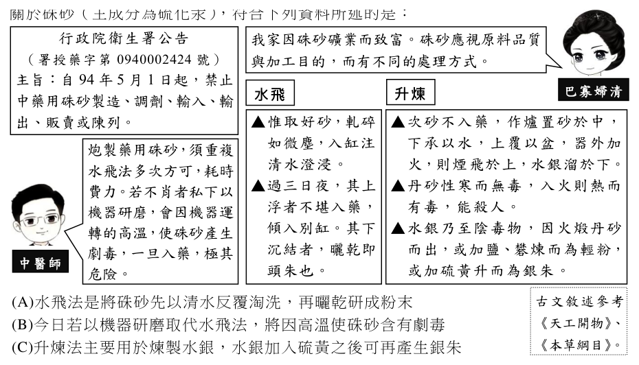

開卷有益 ／
學科能力測驗 ／ 國綜 ／ 113 年113 年學科能力測驗國綜試題與答案
這一頁是民國 113 年學科能力測驗國綜的整份歷屆試題，共 36 題，題目與標準答案出自大考中心 學測歷年試題（依著作權法 §9，考試試題不受著作權保護），其中 36 題附有詳解。以下逐題列出題幹、選項與答案；要計時作答或記錄成績，請用線上練習。
線上作答這一科 →
全部 36 題
第 1 題
下列「」內的字，讀音前後相同的是：
（A） 排「闥」而去／同聲「撻」伐（B） 「篙」工撐棹／「蒿」目時艱（C） 桂「棹」蘭槳／「踔」厲奮發（D） 切勿「逡」巡／為惡不「悛」答案：（A）
詳解與考點 正解：題幹要求比較前後字的讀音，須同時核對聲母、韻母與聲調。A：「闥」與「撻」皆讀 ㄊㄚˋ，讀音完全相同，故 A 為正解。
B：「篙」讀 ㄍㄠ，「蒿」讀 ㄏㄠ；雖同為一聲，聲母不同，B 錯誤。
C：「棹」讀 ㄓㄠˋ，「踔」讀 ㄓㄨㄛˊ，韻母與聲調不同，C 錯誤。
D：「逡」讀 ㄑㄩㄣ，「悛」讀 ㄑㄩㄢ，韻母不同，D 錯誤。它看起來對，是因為兩字聲母相同，仍須辨清 ㄩㄣ 與 ㄩㄢ。
本題考點：字音辨析——比較讀音須逐一核對聲母、韻母、聲調，三者皆相同才算同音；形近字——字形相近或同一聲調，不可直接推定讀音相同。
第 2 題
下列文句，完全沒有錯別字的是：
（A） 德國隊蟬聯冠軍，呼聲最高，卻止步四強（B） 昨夜賓客蒞臨，主人倒屜相迎，賓主盡歡（C） 這棟大樓落實綠建築理念，設計不落巢臼（D） 離鄉背井的學子負趿北上，在外租屋不易答案：（A）
詳解與考點 正解：題幹要求「完全沒有錯別字」，逐一核對詞語正字即可判斷。A：「蟬聯」指連續保持頭銜，「止步四強」用字也正確，故 A 為正解。
B：「倒屜相迎」應作「倒屣相迎」；屣是鞋子，典出急於迎客而連鞋都穿反，「屜」是抽屜的屜，形近致誤。它看起來對，是因為「屣」字罕用，容易以常見的「屜」代入。
C：「不落巢臼」應作「不落窠臼」；窠臼指舊有格套，「巢」雖與窠意思相近，仍非此成語正字。
D：「負趿北上」應作「負笈北上」；笈是書箱，負笈指背著書箱求學，「趿」為足部動作，字義不合。
本題考點：錯別字辨析——遇形近字須回到字的本義驗證，屣＝鞋、窠＝格套、笈＝書箱；本義與語境或固定詞語不合，即可判為別字。
第 3 題
依據下文，對孔子來說，困難的是：孔子為這個弟子與眾不同的難馴感到驚訝。單是好勇厭柔，不少人也是如此，但像子路一樣輕蔑事物形式的人卻很罕見。「禮」雖然最終歸結於精神，卻必須從形式進入。「禮云禮云，玉帛云乎哉？樂云樂云，鐘鼓云乎哉？」當孔子這麼講時，他非常樂意傾聽，但一說明禮樂細則，他立刻顯得一臉無趣。一邊要與這種逃避形式主義的本能搏鬥，一邊又要傳授他禮樂，即使對孔子來說，也是困難重重。（改寫自中島敦〈弟子〉）
（A） 調整傳統講授方式，引導缺乏耐性的子路接觸禮樂（B） 自己雖也不喜歡禮樂形式，卻得想辦法讓子路接受（C） 讓子路理解禮樂的精神固然重要，形式也不可或缺（D） 以禮樂形式中所隱含的精神，改變子路的浮躁好勇答案：（C）
詳解與考點 正解：關鍵句是「禮雖然最終歸結於精神，卻必須從形式進入」；子路輕蔑形式，孔子卻必須傳授禮樂，因此困難在使他兼顧禮樂的精神與形式。C：讓子路理解精神重要、形式也不可或缺，正是孔子面對的難題，故 C 正確。
A：文中只說子路聽到禮樂細則便無趣，未說孔子要調整傳統講授方式，A 錯誤。
B：孔子主張禮必須從形式進入，文中沒有他自己不喜歡禮樂形式的意思，B 錯誤。
D：孔子的困難是向逃避形式的子路傳授禮樂，材料強調形式為進入精神的必要途徑，不是單以精神改變其浮躁好勇，D 錯誤。它看起來對，是因為選項提到「精神」，但漏掉了文章反覆強調的形式必要性。
本題考點：文意理解——先抓作者以轉折句界定的核心觀點，再比對選項是否完整保留條件；禮樂精神與形式——精神雖是歸結，仍須由形式進入，不能偏廢任一面向。
第 4 題
下文 處應填入可總括文中所舉四項事例的文句，最適合填入的是：。是以雞知將旦，不能究陰陽之曆數；鵠識夜半，不能極晷景之道度；山鳩知晴雨於將來，不能明天文；蛇螘知潛泉之所居，不能達地理。（《抱朴子》）
（A） 英逸之才，非淺短所識（B） 官達者，才未必當其位（C） 小疵不足以損大器，短疢不足以累長才（D） 偏才不足以經周用，隻長不足以濟眾短答案：（D）
詳解與考點 正解：題幹列出雞、鵠、山鳩、蛇螘各自能知一事，卻分別不能通曉曆數、日影、天文、地理；關鍵是「各有偏長，不能周知全局」。D 的「偏才不足以經周用，隻長不足以濟眾短」正可總括四項事例，故 D 為正解。
A：「英逸之才，非淺短所識」談傑出人才不為淺識者所能理解，沒有概括各物一技之長卻不能通曉全局的意思，A 錯誤。
B：「官達者，才未必當其位」談官位與才能是否相稱，與文中動物的知能無關，B 錯誤。
C：「小疵不足以損大器，短疢不足以累長才」談小缺點不損害大才，與文中偏長不足以周用的主旨相反，C 錯誤。它看起來對，是因為句中也同時提到短處與長才，但它強調的是短處不足為害，不是偏才不能周全。
本題考點：古文文意統整——先找列舉事例共同的「偏長而不周知」關係，再以選項的主旨對應；總括句判準——能同時涵蓋每個例子的共同邏輯，才可作為段落總結。
第 5 題
下列是一段古文，依據文意，甲、乙、丙、丁排列順序最適當的是：昔周公之相也，甲、皆諸侯卿相之人也乙、是以俊義滿朝，賢智充門丙、謙卑而不鄰，以勞天下之士丁、孔子無爵位，以布衣從才士七十有餘人況處三公之尊以養天下之士哉？(《鹽鐵論》) 鄰：通「吝」，吝惜。
（A） 甲乙丁丙（B） 甲丙乙丁（C） 丙甲丁乙（D） 丙乙丁甲答案：（D）
詳解與考點 正解：題幹的關鍵是「以勞天下之士」承接周公「處三公之尊」仍謙卑禮士的事蹟，先敘其作為，再敘結果，接著以孔子作對比。丙「謙卑而不鄰，以勞天下之士」先說周公禮賢；乙「是以俊義滿朝，賢智充門」以「是以」承接丙；丁轉說孔子「以布衣從才士七十有餘人」；甲「皆諸侯卿相之人也」承接丁的「才士」，末接反問句「況處三公之尊以養天下之士哉」。順序為丙乙丁甲，D 為正解。
A：甲若置首句，「皆諸侯卿相之人也」沒有可指涉的前文，無法成立；A 錯誤。
B：甲置首句同樣缺少所指對象，且丙之後應以「是以」引出結果，不應直接接乙以外的句子；B 錯誤。
C：丙後應接含「是以」的乙，才能形成作為與結果；C 錯誤。它看起來對，是因為丁、甲確實須相連，但忽略乙必須緊承丙的因果標記「是以」。
本題考點：古文語意排序——遇「是以」先找其前因、後果；代詞或省略主語須回指前文可承接的對象，再檢查轉折或比較句的收束位置。
中國湖南省江永地區，一種神祕的菱形文字—女書—悄悄流傳超過百
年。它是一種使用當地方言，須以「唱誦」方式表達與理解的表音文字。女人用它來自傳訴情、互通心跡、結交姊妹、祝禱祈願、傳說紀聞……。
江永是典型的農業社會，女孩從小「不得亂步出娘房」，因此未嫁的女兒稱作「樓中女」。未嫁的女兒在娘樓做女紅時，邊唱歌、邊學認女書、寫女書、織女書字，進入正統教育體系之外的知識系統，且因熱愛女書而結為姊妹。當有姊妹出嫁，每個姑娘從婚前幾天便開始哭嫁，餽贈女書留念，感懷女性身不由己的共同命運，娘樓是她們建立封閉又親密的女性空間，但事實上又是「無常」的象徵。
女書
在以哭嫁為主題的女書作品中，常常描述父系社會婚姻將女人從原生土壤連根剜起的滋味，顯示哭嫁不僅是少女面對未知命運的恐懼，更是女人剪斷血緣、地緣與人緣臍帶時的哀號。但也由於有女書，因而婚後她們並不像其他文盲婦女喪失向外通訊、結盟的能力。姊妹們的通信中苦多樂少，但總是盡心相勸、彼此扶持。
她們透過女書，在社會現實與磨難中掙扎、拉鋸、妥協，尋找生存
之道。甚至在書寫過程中，執筆者也不止於代書，悲憐勸解的同時，
常將自己的身世寫了進去，形成風格特殊的「參與寫作」。
哭嫁：哭唱儀式，新
娘出嫁時會在娘家
唱哭嫁歌，訴說離
愁別緒。
關於女書的起源至今仍是個謎，江永女性發明了世界上獨一無二的女書，但因以土話為音，加上地方阻隔，僅局限於江永一帶流傳。也由於女性死後女書多作為殉葬而被焚毀，以及隨著教育的普及、傳統習俗、社會情境的改變等因素，女書逐漸式微。然而，女書的研究與應用方興未艾，尤其是在消費時代裡，女書反成為一種時尚符號，常出現在文創設計中。（改寫自鄭至慧、劉斐玟等相關研究報告）
第 6 題
關於上文「娘樓」與江永女性的關係，說明最適當的是：
（A） 婚前：娘樓禁錮女性青春／婚後：娘樓困鎖女性夢想（B） 婚前：女性於娘樓交流心事／婚後：女性於娘樓處理夫家家務（C） 婚前：女性在娘樓企盼美好姻緣／婚後：女性因哭嫁禁忌不得重返娘樓（D） 婚前：娘樓是女性接受體制外知識之處／婚後：娘樓是女性情感寄託的依憑答案：（D）
詳解與考點 正解：題幹問娘樓與江永女性的關係，關鍵是分清婚前的娘樓空間與婚後由女書延續的情感聯繫。D：婚前娘樓是女性學習女書、建立姊妹關係的體制外知識空間；婚後女性藉由在此形成並留贈的女書維繫情感與互助，故 D 為正解。
A：文中說娘樓建立封閉而親密的女性空間，未說它婚前禁錮青春或婚後困鎖夢想。
B：文中未說女性婚後仍在娘樓處理夫家家務。
C：文中未說女性在娘樓企盼姻緣，也未說因哭嫁禁忌不得重返。
本題考點：文本證據——婚前活動與婚後情感意義要分別依原文判讀；承接關係——婚後延續情感的是在娘樓學習、形成並留贈的女書，而非把娘樓本身直接視為婚後活動場所。
第 7 題
依據上文，關於女書的說明，不適當的是：
（A） 女書是婦女可掌握自我話語權的發聲筒，也是姊妹相濡以沫情誼的表現（B） 以女書書寫他人故事，常在他人生命中照見自己，而融入個人身世感懷（C） 女書是江永婦女的生命刻痕，而今江永女性為復甦女書多投身文創設計（D） 藉由女書音聲與表意的交織，女性藉以面對現實困境、悲訴社會的不公答案：（C）
詳解與考點 正解：文章只說女書在消費時代成為時尚符號，常出現在文創設計中，未說「今江永女性」為復甦女書而「多投身」文創設計。C 增添了文本沒有的主體與事實，最不適當，故選 C。
A：女書讓女性自傳訴情、互通心跡、結交姊妹，符合掌握話語權與相互扶持。
B：執筆者常將自己的身世寫進代書內容，正是從他人生命照見自身。
D：女書以當地方言唱誦，女性藉其悲訴、通信與結盟以面對困境，符合文意。
本題考點：閱讀理解——不適當選項常把文本的「現象」擴寫成特定群體的「行動」；作答須逐一核對主體、範圍與因果，不以合理推測替代文本證據。
第 8 題
下列女書作品，不是表現「女性婚後的失落」的是：
（A） 將說嫁奩兩半分，又氣淚流難一字。吃盡千般鹽香味，做盡媳婦一字難（B） 粗字粗針到貴府，只望姑娘請諒寬。不比貴家禮義全，你在高堂好過日（C） 十八歲女三歲郎，夜間洗腳抱上床。睡到五更索奶吃，我是寒妻不是娘（D） 他娘心中用計策，暗中叫子到別州。瞞起台身不知得，不知丈夫到哪方答案：（B）
詳解與考點 正解：題幹問「不是表現女性婚後的失落」，須從詩句辨認是婚後苦楚，還是出嫁時對夫家的祝福。B：「只望姑娘請諒寬」、「你在高堂好過日」是出嫁女的謙遜祝願，未寫婚後失落，故 B 為正解。
A：「吃盡千般鹽香味，做盡媳婦一字難」寫媳婦生活的辛苦與為難，表現婚後失落。
C：「十八歲女三歲郎」及「我是寒妻不是娘」寫幼夫索奶造成的婚姻困境，表現婚後苦楚。
D：丈夫被母親暗中叫往別州，妻子不知丈夫去向，寫婚後的茫然失落。
本題考點：詩句情感辨析——先抓人物關係與情境，再判斷語句是祝願、離愁或婚後苦楚；反向選擇判準——題幹問「不是」時，應選唯一未呈現指定情感的選項。
大多數機場的指標都使用黑體字，因為它給人乾淨簡潔的現代感。若使用新細明體，由於筆畫很細，一段距離外就不易閱讀，甚至連發現它都有困難。新細明體的橫筆設計得偏細，不適合使用在距離讀者較遠的指標上。而黑體橫筆夠粗，就有良好的「易視性」。新細明體在80年代曾是新潮設計，但時過境遷，難免審美疲乏，是想改變中文字型設計現狀者要革新的對象。高解析度螢幕時代，它更難以勝任螢幕上的閱讀。但只要它是系統內建的首要字型，就會是大多數人的首選。如此一來，文字風景的基本面一時難有什麼變化。
新細明體是專門用在「紙本」上的，離讀者眼前不遠，可能是放在桌上、捧在手上讀。這種字體我們稱為「內文」。通常，內文字體會設計得讓人感覺變化不大，沒有張狂的造型，像喝水那樣素然無味。但這樣「無聊」的體驗，反而有助於專心吸收資訊。新細明體是很普遍的內文字體，因而有學院指定報告使用新細明體，以減輕教授閱讀的負擔。（改寫自柯志杰、蘇煒翔《字型散步》）
第 9 題
上文認為「文字風景的基本面一時難有什麼變化」的主要原因是：
（A） 新細明體的識讀性高（B） 新細明體取得較方便（C） 人們習慣近距離閱讀（D） 人們不在意字型美醜答案：（B）
詳解與考點 正解：題幹的「文字風景的基本面一時難有什麼變化」緊接「只要它是系統內建的首要字型，就會是大多數人的首選」，關鍵在於系統預設使使用者容易取得並沿用新細明體。B：新細明體取得較方便，正是文中所說它成為多數人首選的主要原因，故 B 為正解。
A：文中說新細明體用於遠距指標時易視性差，在高解析度螢幕上也較難勝任；識讀性高不是文字風景難變的主因。
C：近距離閱讀只說明新細明體適合作為紙本內文字體，不能解釋它何以持續成為系統中的多數首選。
D：作者提到審美疲乏並主張革新，不能推成使用者不在意字型美醜。它看起來對，是因為文中說內文字體設計得「無聊」有助閱讀，但那是在談內文閱讀效果，不是字型普及的原因。
本題考點：論說文因果判讀——問主要原因時，回扣明示因果或條件句；段落功能辨析——字體的易視性、審美與內文用途皆是旁論，須與「系統內建、首選」的直接原因區分。
第 10 題
關於中文字型，最符合上文觀點的是：
（A） 新細明體宜運用在近距離閱讀的紙本，而不適用於指標（B） 以黑體字製作機場指標，主要因其變化不大而利於辨識（C） 用高解析度螢幕閱讀而想專心吸收資訊，宜選用新細明體（D） 撰寫學術報告為彰顯專業且予人簡淨的感受，宜選用黑體答案：（A）
詳解與考點 正解：題幹要求選最符合上文的中文字型觀點，須扣住新細明體的閱讀距離與黑體的易視性。A：新細明體適合近距離閱讀的紙本，不適合遠距離辨識的指標，符合文意，故A正確。
B：機場指標使用黑體的理由是易視性高，不是因為字體「變化不大」，錯誤。
C：文中指出在高解析度螢幕時代，新細明體已難勝任專心吸收資訊的閱讀需求，錯誤。
D：文中沒有主張學術報告為彰顯專業、簡淨感應選黑體，錯誤。
本題考點：說明文判讀——分辨字型適用的媒介、距離與功能；選項核對——理由與結論都須與文意一致，不可只因提到同一字型就判對。
《盲目》是1998年諾貝爾文學獎得主薩拉馬戈最廣為人知的小說。在一個不知名的城市裡，莫名其妙地出現了一種「白盲症」，患者會突然失明，眼前一片渾白。只有一人奇蹟般倖免，但也為此承受更多的責任與壓力。
此書除想像奇幻，敘事也別具特色。書中人物完全無名無姓，只以特徵或職業稱呼─如第一個盲人和妻子、眼科醫生、戴墨鏡的女孩、斜眼的男孩等。全書對話不用引號，也未特別分段，迫使讀者放慢速度，乃至再三重讀，以確定說話者。如同盲人在缺乏指引下，須費力摸索，才能確認當前的位置。
白盲症為全書最重要的象徵。薩拉馬戈設計了多條線索以供解讀。如白盲症使人彼此疑懼，生活脫軌，但患者間也能相互合作，尋求一己和團體的利益。唯一未染疫者固然有諸多方便與更大能力助人，但也因「眾人皆盲我獨明」，而看清人心險惡，甚至為了護衛夥伴安全，不得不手刃施暴者。從而感慨：「如果你看得到我被迫看到的景象，你會情願失明。」白盲症突然消失後，盲而復明者的一番體悟也引人深思：「我覺得我們並沒有失明，我認為我們本來就是『盲目』的。」（改寫自單德興〈瘟疫的文學再現與生命反思〉）
第 11 題
依據上文，關於《盲目》的書寫特色，說明最適當的是：
（A） 將故事場景設定在不知名的城市，顯現疫病蔓延的嚴重（B） 用特徵或職業稱呼角色，呈現人際關係因疫情而徹底崩壞（C） 以缺乏指引方式敘寫對話，形成類近盲者摸索前行的閱讀感受（D） 藉陳述感染者與未感染者的體悟，隱含盲與不盲無須分辨的論述答案：（C）
詳解與考點 正解：題幹問《盲目》的「書寫特色」，關鍵在文中明說全書對話不用引號、未特別分段，使讀者必須費力確認說話者，「如同盲人在缺乏指引下」摸索。C：以缺乏指引的方式敘寫對話，形成類近盲者摸索前行的閱讀感受，正是原文對此敘事手法的說明，故 C 為正解。
A：故事設定在不知名城市確有象徵意味，但原文沒有說此設定用來顯現疫病蔓延的嚴重，A 錯誤。
B：角色以特徵或職業稱呼，是人物無名無姓的寫法；原文未說其目的在呈現人際關係因疫情徹底崩壞，B 錯誤。
D：感染者與未感染者的體悟引人深思，卻非主張盲與不盲「無須分辨」；尤其未染疫者反而看見人心險惡，D 過度推論。
本題考點：閱讀理解——題目問書寫特色時，應鎖定敘事形式及作者明示的閱讀效果；最適當判準——選項須同時符合文本事實與其作用，不可把象徵意義或人物處境擴張為未明說的結論。
第 12 題
關於①、②是否符合上文內容，最適當的研判是： ① 盲者、不盲者的處境，帶出「眼不見為患」與「眼不見為淨」的辯證。 ② 眼盲隱喻心盲，既揭示人本身的盲目，又呈現人性的沉淪。
（A） ①、②皆符合（B） ①符合，②不符合（C） ①不符合，②無法判斷（D） ①無法判斷，②符合答案：（A）
詳解與考點 正解：題幹要求研判①、②是否符合文章。①：文章寫盲者因疑懼而生活脫軌，卻也能相互合作；唯一未染疫者有助人能力，卻因看清人心險惡而承受壓力，能帶出「眼不見為患」與「眼不見為淨」的辯證，故①符合。②：白盲症是全書重要象徵，復明者說人本來就是「盲目」的，且文本呈現疑懼、施暴等人性沉淪，故②符合。因此選 A。
B：②有文本中「本來就是盲目」及人心險惡的線索支持，不能判為不符合，B 錯誤。
C：①可由盲者與未盲者的不同處境及其利弊判讀，並非無法判斷，C 錯誤。
D：①有文本依據，不能判為無法判斷，D 錯誤。
本題考點：文本證據研判——先把①、②拆開，各自對照文章的情節、人物處境與引文；象徵意義——白盲可隱喻心盲，並透過人際疑懼與暴力呈現人性問題。
周處生時或死後沒有多久，便有關於他的軼聞流傳。 甲 如孔約《志怪》云：「義興有邪足虎，溪渚長橋有蒼蛟，並大啖人，並郭西周，時謂郡中三害。周即處也。」又如祖台之《志怪》所述：「義興郡溪渚長橋下有蒼蛟吞啖人，周處執劍橋側伺。久之，遇出，於是懸自橋上投下蛟背而刺蛟，數創，流血滿溪，自郡渚至太湖句浦乃死。」 乙 兩書均成於東晉時期，時間相近。同一件事，何以在記述上各有其偏重之處？ 丙 《世說新語》則結合「三害」與「斬蛟」，並增加「殺虎」情節，使傳說更為完整：
周處年少時，兇彊俠氣，為鄉里所患。又義興水中有蛟，山中有白額虎，並皆暴犯百姓。義興人謂為「三橫」，而處尤劇。或說處殺虎斬蛟，實冀三橫唯餘其一。處即刺殺虎，又入水擊蛟。蛟或浮或沒，行數十里，處與之俱。經三日三夜，鄉里皆謂已死，更相慶。竟殺蛟而出，聞里人相慶，始知為人情所患，有自改意……處遂改勵，終為忠臣孝子。
丁 固定了「義興三害→周處射虎斬蛟→周處幡然悔悟、改過自新」的情節單元，成為後世「周處除三害」傳說的「基型」。（改寫自羅景文〈周處傳說探究〉）
第 13 題
上文有甲、乙、丙、丁四處標記。依據文意，「蓋由民間口傳，各記見聞，彼此歧異，故是尋常事。」句應填在：
（A） 甲（B） 乙（C） 丙（D） 丁答案：（C）
詳解與考點 正解：待填句「蓋由民間口傳，各記見聞，彼此歧異，故是尋常事。」是在回答前文「同一件事，何以在記述上各有其偏重之處？」；應置於問句之後、介紹《世說新語》之前，即丙處，故 C 為正解。
A：甲處位於兩則早期材料之前，尚未提出不同記述的問題，填入後缺少所指的「彼此歧異」。
B：乙處在兩書均成於東晉時期之後、提問之前；此處若先放答案，後面「何以」的提問便失去銜接。
D：丁處在《世說新語》情節與後世傳說基型的結論之前，填入會打斷「固定了……成為……基型」的完整論述。
本題考點：文句銜接——先找待填句所回應的問句與代詞指涉；論述結構——回答原因的句子應緊接問題，並作為後續舉例的過渡。
第 14 題
關於文中引述的三則周處傳說，說明不適當的是：
（A） 孔約提及義興時有三害，周處為其一，而未述及周處的改過自新（B） 祖台之未提到義興三害，聚焦於周處斬蛟，敘述較孔約《志怪》生動（C） 《世說新語》渲染周處殺虎以見其兇彊，呈現與志怪相異的志人特質（D） 《世說新語》增加里人相慶、周處聞知情節，以突出周處悔悟自新的轉折答案：（C）
詳解與考點 正解：題幹問三則傳說的說明何者不適當，須比較各段記述重點。《世說新語》加入殺虎、里人相慶與周處悔悟，重點在人物由為害鄉里到改過自新的轉折。C 把殺虎單獨解為渲染周處兇彊，且稱其呈現與志怪相異的志人特質，忽略殺虎是悔悟轉折的鋪墊，說法偏頗，故 C 為正解。
A：孔約提及義興三害並以周處為其一，未敘述改過自新，符合引文，因此不是本題所問的不適當說明。
B：祖台之未提三害，聚焦斬蛟且以動作、流血滿溪等描寫使敘述較生動，符合引文，因此不是正解。
D：《世說新語》增加里人相慶與周處聞知，正是突出其悔悟自新的轉折，符合文本，因此不是正解。
本題考點：文本比較——分別掌握孔約寫三害、祖台之寫斬蛟、《世說新語》寫悔悟的重點；不適當選項判準——選項若將鋪墊誤當主旨，或忽略情節在全文的轉折功能，即不合文本。
第 15 題
迷因（ meme）是文化傳遞的微型單位，經由模仿、複製、改作，承載片段資訊或觀點，透過語文、圖片或影音等型態流傳，帶來影響。「周處除三害」即屬迷因，依據右列電影《周處除三害》簡介，關於其模仿、改作傳說，說明最適當的是：

（A） 行為動機模仿傳說，陳桂林因欲「為民除害」，（B） 故事結局模仿傳說，陳桂林悔悟後奮發向上，改（C） 人物設計模仿傳說，均安排一關鍵角色，勸說主（D） 三 害 概 念 模 仿 傳 說 ， 將 猛 虎 惡 蛟 轉 為 兩 大 通 緝答案：（D）
詳解與考點 正解：題幹以「模仿、複製、改作」界定迷因，比對傳說的「義興三害」與電影簡介的情節轉化即可判斷。D：電影將猛虎、惡蛟轉化為兩大通緝要犯，並以貪、嗔、痴為「三害」創發新義，符合迷因保留核心概念又轉入新情境的特徵，故 D 為正解。
A：電影簡介明言陳桂林是因不希望死後被遺忘，才決定追殺兩大通緝要犯，動機不是「為民除害」，A 錯誤。
B：電影結局是陳桂林投案後接受槍決，並非悔悟後奮發向上、改造自己，B 錯誤。
C：傳說中有人說周處殺虎斬蛟，目的是使三害僅餘其一；電影中醫師則是勸陳桂林自首，並非兩者都有關鍵角色勸主角在離世前為人間除惡，C 錯誤。
本題考點：迷因改作——比較原作與改作時，以核心概念是否被保留、轉化為新情境為判準；人物動機、結局與功能必須逐項對應文本明言的情節。
賈政這面鏡子，映照的性質和寶玉正相反。寶玉有來自上天的靈竅稟賦，賈政的鏡性卻來自人間現實環境。眾人都在做夢時，只有賈政是醒著的。小說家給予賈政重任，讓他興建家園、重整家園，在各種緊要關頭，起動警惕、總結、前瞻等作用。賈政恨寶玉不務正，專在「濃詞豔賦上作工夫」。賈政打寶玉，是邊怒打邊流淚。賈政一路提醒寶玉什麼是現實生活，隨時鞭策寶玉，催促寶玉醒來，必須接受歷練而成長成熟，否則不能做好自己承繼賈府的準備。賈政是成人的標徵。作者肯定賈政，善待成年，成年在小說中不是罪過，反被認知成生命的必要階段。賈政其實是瞭解寶玉的，寶玉的詩文才情，大多要借和賈政對話的場合才更顯精神。在痛恨兒子是無用之人的同時，作父親的卻也一眼看得見他奇異天生。
我們終於明白了批評家脂硯齋所言─賈政之為人物，「有深意存焉」。是賈政，扶養寶釵母子；是賈政，攜賈母和黛玉等靈柩歸葬南鄉；是他，送別寶玉。只有賈政可以撫慰生者，安息逝者，讓離者心安地去了。如果寶玉是承盡了愛和哀，賈政則是擔盡了事和責。
即使是生命中不可能達致的，賈政依舊呵護成長尚未到來前的浪漫存在，嘗試建立人間樂園烏托之邦。寶玉是補天之石，支撐著現實人間的則是賈政。（改寫自李渝〈賈政不做夢〉）
第 16 題
依據上文，關於賈政與賈寶玉的父子關係，敘述最適當的是：
（A） 寶玉的哀在於雖發揮文學之才，而未準備好承擔賈政的責任（B） 寶玉被關愛，成長於賈政護守的人間樂園，享受青春的美好（C） 賈政擔負賈府事務，注重現實，故無法理解寶玉的浪漫性格（D） 賈政認為寶玉應該為家人興建與世無爭、遠離廟堂的烏托邦答案：（B）
詳解與考點 正解：題幹要判斷賈政與寶玉的父子關係，關鍵句是賈政一面鞭策寶玉接受歷練，一面看見其詩文才情，且「呵護成長尚未到來前的浪漫存在」。B 所說寶玉受關愛，成長於賈政護守的人間樂園並享受青春，符合文意，故 B 為正解。
A：文中「承盡了愛和哀」是對寶玉的概括，未說他的哀在於已發揮文學才能卻未準備承擔賈政的責任。
C：賈政注重現實但「其實是瞭解寶玉的」，且看得見其奇異天生，不能說他無法理解寶玉。它看起來對，是因為兩人的性質正相反，但相反不等於賈政不理解或不關愛寶玉。
D：建立烏托邦是賈政呵護寶玉浪漫存在的作為，非賈政要求寶玉替家人興建與世無爭、遠離廟堂的烏托邦。
本題考點：現代文閱讀人物關係——以人物評語、行動與作者立場交叉判讀；選項判準——將「性格相反」推成「不能理解」，或將作者對人物的描述改為人物命令，皆屬過度推論。
第 17 題
依據上文，脂硯齋認為賈政此人物「有深意存焉」，此深意應是：
（A） 對比寶玉的靈竅天賦，並諷刺禮教使讀書人思維僵固（B） 體現人在歷練後，學會承擔才是成熟面對生活的態度（C） 凸顯賈政的守舊思維，隱喻家族未來必然會走向衰敗（D） 指出在現實人生中，可以選擇浪漫地或理性地過生活答案：（B）
詳解與考點 正解：題幹問脂硯齋所說賈政「有深意存焉」，關鍵是文末將賈政寫為「成人的標徵」，承擔事與責。B：賈政促使寶玉接受歷練，也承擔家族的現實責任，體現人經歷後學會承擔才是成熟面對生活的態度，故 B 為正解。
A：本文未諷刺禮教使讀書人思維僵固。
C：本文強調賈政扶養、歸葬與送別的承擔，未以他隱喻家族必然衰敗。
D：本文非在主張可自由選擇浪漫或理性的人生方式，而是辨析寶玉與賈政各自承擔的意義。
本題考點：人物深意——由作者對人物功能的總結歸納主旨；推論判準——人物有守成或理性特質，不等於作者必在批判或預言家族命運。
情緒訊號系統有個特色，就是它總是「開啟」的。情緒開始時，幾乎會立刻出現訊號。例如傷心時，眉毛內緣會向上拉，聲音會變得較輕柔低沉。最立即的情緒訊號是臉部表情。人們常把生氣、害怕、嫌惡、哀傷和輕蔑視為負面情緒，驚訝和愉快是正面情緒。這簡單的二分法有兩個問題，一是忽略所謂負面情緒並不總是令人不舒服，如許多人看了一場哀傷的電影後，喜歡大哭一場。二是被視為正向情緒的快樂，也可能很殘忍，如嘲笑別人。唯有檢視各種情緒事件的特性，才能分辨使人愉快還是不愉快。聲音是另一種情緒訊號系統，與臉部表情有許多有趣的差別。臉部是可以觀察的，聲音則是時斷時續的，可以憑意志完全關閉。想隱藏表情，可能是人常以電話取代面對面溝通的原因。電子郵件甚至不需要說和聽，所以不會從聲音流露情緒。身體動作也是情緒訊號：輕鬆時會出現放鬆身體的姿勢，輕蔑的動作是從上往下看對方，驚訝則是把注意力固定在產生情緒的對象。身體動作雖然像臉部和聲音的情緒訊號一樣是不由自主的，但對大多數人而言，控制身體的動作，比完全不露出臉部和聲音的情緒訊號更為容易。（改寫自保羅・艾克曼《心理學家的面相術》）
第 18 題
依據上文，關於情緒訊號的敘述，最適當的是：
（A） 正向情緒會使人露出笑容，總能帶給他人愉快（B） 臉部表情比身體動作情緒訊號，更易憑意志控制（C） 人們常以電話溝通，可能是因為聲音比表情容易隱藏情緒（D） 情緒訊號系統總是開啟的，通常從身體動作最先出現訊號答案：（C）
詳解與考點 正解：題幹問依據上文的正確敘述，關鍵是聲音「可以憑意志完全關閉」及人可能為隱藏表情而以電話溝通。C：聲音比臉部表情容易隱藏情緒，因此人們可能常以電話溝通，符合文意，故為正解。
A：文中指出快樂也可能很殘忍，例如嘲笑別人，並非總能帶給他人愉快。
B：文中說控制身體動作比完全不露出臉部和聲音訊號容易，故臉部表情不是較易控制。
D：最立即出現的情緒訊號是臉部表情，不是身體動作。
本題考點：說明文細節判讀——將選項逐一對照原文的比較關係與限定語；情緒訊號比較——聲音可憑意志關閉，最立即的訊號則是臉部表情。
第 19 題
依據上文，下列文句畫線處所暗示的情緒訊號，解讀最適當的是：
（A） 其（嫦娥）聲清越，烈如簫管。歌畢，盤旋而起，躍登几上， 驚顧之間，已復為箸（B） 客喜而笑，洗盞更酌。肴核既盡，杯盤狼藉。相與枕藉乎舟中，不知東方之既白─（C） 言訖，乘驢而去，其行若飛，回顧已失。靖與張氏且驚且喜，久之，曰：「烈士不（D） 親賢臣，遠小人，此先漢所以興隆也；親小人，遠賢臣，此後漢所以傾頹也。先帝答案：（A）
詳解與考點 正解：題幹關鍵是依本文辨認「聲音」與「身體動作」所流露的情緒訊號。A：「其聲清越，烈如簫管」是聲音訊號；「驚顧之間」呈現驚訝時回望的身體動作，兼具本文討論的兩類訊號，故 A 為正解。
B：「客喜而笑」雖有「笑」這個可觀察的外在表現，但「喜」已由文字直接交代，並非主要藉聲音特徵或身體動作讓讀者推知情緒，B 錯誤。
C：「且驚且喜」直接交代人物情緒，未呈現本文所說可由聲音、臉部或身體動作辨識的具體訊號，C 錯誤。
D：文句在申論親賢遠佞與國勢興衰，沒有描寫人物情緒訊號，D 錯誤。
本題考點：情緒訊號辨識——直接說出情緒不等於藉外在訊號暗示情緒；能由聲音特徵、臉部表情或身體動作推知情緒，才符合題幹判準。
第 20 題
某些心理學家認為：情緒調整模式可藉學習而來。下列最接近此一觀點的是：
（A） 人稟七情，應物斯感，感物吟志，莫非自然（B） 真者，所以受於天也，自然不可易也。故聖人法天貴真，不拘於俗（C） 登山則情滿於山，觀海則意溢於海，我才之多少，將與風雲而並驅矣（D） 聖人所以治人七情，修十義，講信修睦，尚辭讓，去爭奪，舍禮何以治之答案：（D）
詳解與考點 正解：題幹的關鍵是「情緒調整模式可藉學習而來」，應找強調後天禮義可節制情緒的文句。D：「聖人所以治人七情，修十義，講信修睦，尚辭讓，去爭奪，舍禮何以治之」主張以後天禮義教化調整、節制七情，最符合題意，故D正確。
A：「人稟七情……莫非自然」強調情緒出於自然本性，非後天學習調整，錯誤。
B：「受於天也，自然不可易也」強調天性不可改變，與可藉學習調整相反，錯誤。
C：內容寫登山觀海引發才情，談的是情感感發，未談後天調節情緒，錯誤。
本題考點：文意比對——先把題幹觀點轉為「後天學習可調節情緒」，再找同時具備後天教化與節制情緒的語句；語意辨析——「自然」「受於天」指向先天本性，不能作為學習可改變的證據。
父子，人倫之大。父老而子不能事，則其罪在子；子幼而父不能養，則其責在父。劉珵為衡州知郡孫，有男元老，幼不撫養，而賣與鄉民鄭七。棄衣冠而服田畝，情亦可憐，此猶可諉也，曰劉珵一時為貧之故。已而，元老不安於鄭七家，逃歸本父，劉珵固宜復回天理，自子其子矣，乃復以元老賣與程十乙，則其意安在哉？可謂敗人倫、滅天理之已甚者！今鄭七入詞，欲取回元老於已去三年後，此決無復合之理。……劉珵兩將元老賣弄，為父不父，本合勘杖，且與從蔭，決小杖二十。元老牒押往族長劉萬二宣教宅，聽從收養。觀此子情貌奸狡，兼所習已乖，請萬二宣教嚴與鈐束，庶免墮落下流，為衣冠之玷，亦一美事。（《名公書判清明集》）
入詞：具文陳述。宣教：宣教郎，官名。
第 21 題
若依右框當代判決書要項，觀察上列古代判決書，最符合文中所述的是：
（A） 當事人：程十乙為原告，劉珵、鄭七為被告（B） 事實：鄭七有償獲得元老，自認有理由繼續保有養子（C） 主文：劉珵須賠償鄭七，並不得與元老恢復父子關係（D） 理由：鄭七已撫養元老三年；元老已對生父心懷不滿答案：（B）
詳解與考點 正解：題幹要用當代判決書要項整理古代判詞，關鍵是區分當事人主張、主文與裁判理由。B：鄭七曾有償取得元老，且「入詞」要求取回已離去三年的元老，符合其自認有理由繼續保有養子的事實主張，故 B 為正解。
A：入詞請求取回元老的是鄭七，非程十乙。
C：判詞未命劉珵賠償鄭七；主文是杖責劉珵，並將元老交族長劉萬二收養。
D：裁判理由在劉珵兩度賣子、敗人倫滅天理，非鄭七撫養三年或元老不滿生父。
本題考點：判決書要項——事實是當事人爭執與主張，主文是法院處置，理由是裁判依據；古文轉譯——先辨認「入詞」的請求人，再分辨法官的評斷。
第 22 題
下列敘述，最符合上文寫作方式的是：當代判決書的要項 ◎當事人：起訴（原告）與被訴（被告）兩造。 ◎事實：訴訟雙方主張的事實，非法官採認的事實。 ◎主文：法官對該訴訟的決定。 ◎理由：法官對為何這樣判決的說明。
（A） 全文大致先提出法律規定，再說明案件違背該法條，最後敘述判決結果（B） 說明案件時，先列被告自陳的事實，再敘原告的反駁，再舉證人的佐證（C） 以「其罪在子、其責在父」為綱領，依序指陳「子不子、父不父」之過（D） 時見教化口吻，除對悖倫者嚴辭訓斥，並期勉受託者負起維護禮教之責答案：（D）
詳解與考點 正解：題幹所述古代判決書的寫作方式，關鍵在其不只裁斷事實，也帶有維護倫理秩序的教化語氣。D：文中嚴斥劉珵「敗人倫、滅天理」，又期勉族長劉萬二「嚴與鈐束，庶免墮落下流，亦一美事」，兼具訓斥悖倫者與期勉受託者的作用，最符合，故 D 為正解。
A：文章並非依「法律規定、違法事實、判決結果」的現代判決結構鋪陳，錯誤。
B：文章沒有依序羅列被告自陳、原告反駁與證人佐證的訴訟攻防，錯誤。
C：文章雖涉及子、父的責任，卻非以「其罪在子、其責在父」為綱領逐項指陳，錯誤。
本題考點：寫作方式辨析——由評斷語氣與結尾期許判讀作者立場；古代判決書特色——除裁斷案件外，常以倫理教化訓斥失序者並要求相關人負責。
唐代稱主掌考試為知貢舉。因知貢舉者有取捨大權，舉子便在考試前向其投詩獻文，以博得青睞，一旦登第，感恩終生，於是產生特有的「座主」與「門生」關係。柳宗元〈與顧十郎書〉中說：「凡號門生而不知恩之所自出者，非人也。」崔群的例子也反映了當時這種社會意識。崔群在中唐時被譽為賢士，韓愈盛讚他「考之言行而無瑕尤」，但他對座主與門生關係，卻表露出相當世俗的看法。《獨異志》云：崔群為相，清名甚重。元和中，自中書舍人知貢舉，既罷，夫人李氏嘗勸其樹莊田以為子孫之計。笑答曰：「余有三十所美莊良田遍天下，夫人復何憂？」夫人曰：「不聞君有此業。」群曰：「吾前歲放春榜三十人，豈非良田耶？」夫人曰：「若然者，君非陸相門生乎？然往年君掌文柄，使人約其子（簡禮），不令就春闈之試。如君以為良田，則陸氏一莊荒矣。」群慚而退，累日不食。
陸相：陸贄。
以莊園比喻門生，極易為唐代人所接受。及第的舉子若違世俗，就是柳宗元指斥的「非人也」。（改寫自傅璇琮《唐代科舉與文學》）
第 23 題
下列敘述，可藉由上文判斷確知的是：
（A） 韓愈、陸贄皆曾於唐代知貢舉（B） 柳宗元於顧十郎知貢舉時登榜及第（C） 韓愈肯定崔群言行，但不認同其拘守座主門生關係（D） 柳宗元、崔群對座主門生關係的認知，不脫時人之見答案：（D）
詳解與考點 正解：柳宗元說門生不知恩之所自出者「非人也」，顯示重視座主門生關係；崔群又以放榜門生比作「美莊良田」，也反映當時世俗看法。D 說二人認知不脫時人之見，可由文中確知，故選 D。
A：文中只說崔群曾知貢舉，未說韓愈或陸贄皆曾知貢舉。
B：柳宗元寫給顧十郎的信不能證明顧十郎知貢舉時他登第。
C：韓愈盛讚崔群言行無瑕尤，文中未說他不認同崔群的座主門生觀。
本題考點：文本證據判斷——「可確知」只能選有明確文句支持者；人物間有書信、稱讚或關聯，不能自行補成未說的經歷與立場。
第 24 題
上文《獨異志》中的崔群之妻說「陸氏一莊荒矣」，最可能的原因是：
（A） 譏嘲陸贄未曾知貢舉，缺乏門生（B） 暗諷崔群受陸贄提拔，卻不報恩（C） 感嘆陸贄子孫不上進，門庭漸衰（D） 提醒崔群以陸贄為戒，買田躬耕答案：（B）
詳解與考點 正解：題幹把及第門生比作「莊田」，並說崔群曾請人約束陸贄之子，使其不能參加春闈；這觸發座主與門生應互相報恩的關係。B 指出崔群受陸贄提拔，卻未回報恩主，正是妻子所說「陸氏一莊荒矣」的意思，故 B 為正解。
A：陸贄是崔群的座主，題文並非譏嘲陸贄未曾知貢舉、缺乏門生，A 錯誤。
C：妻子批評的是崔群阻礙陸贄之子應試，非感嘆陸贄子孫不上進或門庭衰落，C 錯誤。它看起來對，是因為「一莊荒」表面像是在談家業衰敗；但前文已明說莊園是門生的比喻。
D：題文沒有要崔群買田躬耕，而是以陸贄的門生關係責備他忘恩，D 錯誤。
本題考點：文言文語境推論——先確認比喻的本體與喻體，題中莊田指門生；唐代科舉人際關係——座主提拔門生後，門生應知恩回報，違反此規範即是批評焦點。
第 25 題（多選）
下列文句畫底線的詞語，運用適當的是：
（A） 就算勉強通過安全檢查，但心存僥倖的防災態度，仍不足為訓（B） 世事變化如白雲蒼狗，刻骨銘心的情感與誓約，已成過眼雲煙（C） 這篇文章見解獨特，不同流俗，有如空谷足音，是難得的佳作（D） 萊特兄弟是發明飛機的始作俑者，拜其所賜，才使天涯若比鄰（E） 小陳做事胸無城府欠缺規劃，同事常須為其善後，而心生抱怨答案：（A）（B）（C）
詳解與考點 正解：題幹要求辨析詞語是否符合本義與褒貶色彩。A：「不足為訓」指不值得效法，用於心存僥倖的防災態度恰當。B：「白雲蒼狗」比喻世事變化無常，用來說情感與誓約終成過眼雲煙恰當。C：「空谷足音」比喻難得的人事物，形容見解獨特、不同流俗的佳作恰當，故 A、B、C 為正解。
D：「始作俑者」指首開不良先例的人，含貶義；萊特兄弟發明飛機是正面事蹟，不能這樣使用。
E：「胸無城府」指人坦率、沒有心機，不是欠缺規劃；它看起來對，是因為「城府」容易被誤解成做事的周詳規畫。
本題考點：成語本義與感情色彩——先確認成語的核心義與褒貶，再核對語境；詞義辨析——不足為訓＝不值得效法，空谷足音＝難得，始作俑者＝首創壞事，胸無城府＝坦率無心機。
第 26 題（多選）
中文文句中的「以」，可用於某項作為之後，表示該作為的目的，例如「保持距離（作為），以策安全（目的）」。下列畫底線文句中的「以」，屬於此種用法的是：
（A） 垣牆周庭，以當南日（B） 願陛下託臣以討賊興復之效（C） 無求生以害仁，有殺身以成仁（D） 挾飛仙以遨遊，抱明月而長終（E） 余嘉其能行古道，作師說以貽之答案：（A）（C）（E）
詳解與考點 正解：題幹界定「以」置於作為之後、表示目的，須檢查後句是否是前一作為要達成的結果。A：「垣牆周庭，以當南日」，圍牆環繞庭院的目的在遮擋南日，正確。C：「殺身以成仁」，殺身的目的在成仁，正確。E：「作師說以貽之」，作〈師說〉的目的在贈與對方，正確，故選 A、C、E。
B：「託臣以討賊興復之效」的「以」介引委託臣下辦理的事項，不表示目的，錯誤。
D：「挾飛仙以遨遊」的「以」表伴隨方式，意為帶著飛仙遨遊，不表示目的，錯誤。
本題考點：文言虛詞「以」——作目的連詞時可譯為「來、用以」；判斷方法——將「以」後內容視為前一動作所欲達成的目的，若是受託事項或伴隨方式，便非目的用法。
第 27 題（多選）
下列各組「」內的詞，意義前後相同的是：
（A） 三五年內，即「當」太平／快意「當」前，適觀而已矣（B） 便扶「向」路，處處誌之／「向」時估帆所出入者，時已淤為沙灘（C） 爾其自戕「爾」手／蒙賜月明之照，乃「爾」寂飲，何不呼嫦娥來（D） 若亡鄭而有益於君，「敢」以煩執事／入咸陽，毫毛不「敢」有所近（E） 軒凡四遭火，「得」不焚，殆有神護者／「得」比勁節長垂，千人共仰答案：（B）（E）
詳解與考點 正解：題幹比較同字在前後句的意義，須把虛詞置回各自語境判斷。B：「便扶向路」的「向」意為「先前」；「向時估帆所出入者」的「向」也意為「先前」，B 正確。E：「得不焚」的「得」意為「能夠」；「得比勁節長垂」的「得」也意為「能夠」，E 正確。
A：「當太平」的「當」意為「將要」；「快意當前」的「當」意為「面對」，不同。
C：「自戕爾手」的「爾」意為「你的」；「乃爾寂飲」的「爾」意為「如此」，不同。
D：「敢以煩執事」的「敢」是謙辭，意為冒昧；「不敢有所近」的「敢」意為敢於，不同。
本題考點：文言虛詞辨析——同字是否同義，須以所在句的語法功能與上下文判斷；代詞與副詞判準——「爾」可表你的或如此，「當」「敢」亦須依句意分辨。
第 28 題（多選）
依據下文，關於臺灣的海洋歷史文化，敘述適當的是：臺灣位處廣闊海洋中，島上不同族群，都有海洋活動的歷史經驗。部分史前族群和平埔族人駕駛側翼板的船隻配合洋流、季風遠航，卑南族有海祭祭典，達悟人更是典型的海洋民族。清帝國治臺期間，福建、廣東人民冒險渡過黑水溝來臺灣，其冒險打拚、追求「出頭天」的精神，成為臺灣強韌生命力的根源。1949年，大量移入的新住民，增加了臺灣社群構成的多樣性。兩波移民雖原籍地與背景不同，「過鹹水」則是共同的歷史記憶。明、清時期的閩南移民，帶來冒險謀利的商業性格。臺灣從南到北港口林立，顯示蓬勃發展的生命力。大航海時代，東亞海域在國際貿易上的地位日漸重要，而臺灣因地處此一海域的交通要衝，遂成為各國進行商業交易的集散地。西班牙、荷蘭先後占領臺灣，將臺灣推向西方近代化的進程，也帶來商業文明的思維。回望歷史，中國、日本、南亞與西方國家的文化在此地交流，並融合原民的南島文化，形成特殊的臺灣文化。（改寫自戴寶村《臺灣的海洋歷史文化》）
（A） 「過鹹水」的經驗，是不同時代漢人移民相同的歷史記憶（B） 商業文明思維與近代化進程，奠基於兩波漢人移民的拓墾（C） 被近代西方列強占據後，海上貿易才蓬勃發展，因而港口林立（D） 因地理條件、南島民族、渡海移民及經貿活動，形成文化特色（E） 除融合原民、漢人文化，亦受到日本、南亞與西方文化的影響答案：（A）（D）（E）
詳解與考點 正解：題幹要求依全文整合臺灣海洋歷史文化。A：兩波漢人移民雖原籍與背景不同，皆有「過鹹水」的共同歷史記憶，正確。D：臺灣的地理位置、原民南島文化、渡海移民與海上經貿交流共同形塑文化特色，正確。E：文中明言文化交流涉及日本、南亞與西方國家，故 E 正確。
B：文中說商業文明思維與西方近代化進程，是西班牙、荷蘭占領後帶來，非奠基於兩波漢人移民的拓墾，B 錯誤。
C：閩南移民已帶來冒險謀利的商業性格，且港口林立並非題文所說「被近代西方列強占據後才」出現，C 錯誤。它看起來對，是因為西班牙、荷蘭確實推動近代化進程，但選項把時間與原因限縮得過度。
本題考點：長文資訊整合——逐項回扣原文的主詞、因果與時間順序；必要條件辨析——原文說「帶來」不等於唯一原因，選項出現「才」等排他語時須特別檢驗。
第 29 題（多選）
關於硃砂（主成分為硫化汞），符合下列資料所述的是：行政院衛生署公告（署授藥字第 0940002424 號）主旨：自 94 年 5 月 1 日起，禁止中藥用硃砂製造、調劑、輸入、輸出、販賣或陳列。炮製藥用硃砂，須重複水飛法多次方可，耗時費力。若不肖者私下以機器研磨，會因機器運轉的高溫，使硃砂產生劇毒，一旦入藥，極其危險。中醫師我家因硃砂礦業而致富。硃砂應視原料品質與加工目的，而有不同的處理方式。水飛升煉巴寡婦清 ▲惟取好砂，軋碎如微塵，入缸注清水澄浸。 ▲過三日夜，其上浮者不堪入藥，傾入別缸。其下沉結者，曬乾即頭朱也。 ▲次砂不入藥，作爐置砂於中，下承以水，上覆以盆，器外加火，則煙飛於上，水銀溜於下。 ▲丹砂性寒而無毒，入火則熱而有毒，能殺人。 ▲水銀乃至陰毒物，因火煅丹砂而出，或加鹽、礬煉而為輕粉，或加硫黃升而為銀朱。

（A） 水飛法是將硃砂先以清水反覆淘洗，再曬乾研成粉末（B） 今日若以機器研磨取代水飛法，將因高溫使硃砂含有劇毒（C） 升煉法主要用於煉製水銀，水銀加入硫黃之後可再產生銀朱（D） 銀朱藉升煉獲得，不僅速度快，毒性也比水飛法獲得的頭朱低（E） 藥用硃砂若以安全方式炮製，非全不可用，但臺灣目前完全禁用答案：（B）（C）（E）
詳解與考點 正解：題幹要求整合公告與水飛、升煉資料，須分別核對製法、毒性與禁令。B：資料明言機器研磨的高溫會使硃砂產生劇毒，正確。C：升煉時火煅丹砂可得水銀，水銀加硫黃可製成銀朱，正確。E：資料顯示安全炮製的藥用硃砂並非理論上全不可用，但公告自 94 年 5 月 1 日起禁止中藥用硃砂製造、調劑、輸入、輸出、販賣或陳列，正確。
A：水飛法是將好砂軋碎後注清水澄浸，取下沉結者曬乾成頭朱，不是反覆淘洗後再研成粉末。
D：資料未比較銀朱與水飛法所得頭朱的毒性高低，也未說升煉速度較快。
本題考點：圖表整合——各選項須逐一回扣資料的製程與結論；資訊不足判準——資料未作毒性或速度比較時，不可自行推得比較結果；法規事實判讀——依題幹所列公告內容辨識禁用範圍。
甲
鄭成功起兵荼毒濱海，民間患之。有問善知識云：「此何孽肆毒若是？」答曰：「乃東海大鯨也。」問何時而滅？曰：「歸東即逝。」凡成功所犯之處，如南京、溫、台並及臺灣，舟至海水為之暴漲。順治辛丑攻臺灣，紅毛先望見一人冠帶騎鯨，從鹿耳而入，隨後成功將舟由是港進。癸卯成功未疾時，轄下夢見前導稱成功至，視之，乃鯨首冠帶乘馬，由鯤身東入於外海。未幾，成功病卒，正符「歸東即逝」之語。（《重修福建臺灣府志・叢談》）
乙
善知識：指高僧大德。
鄭成功，倭產也。誕降之前一日，天晴霽無片雲。薄暮，忽有雷破土窟而出，煙霾漲天，人對面不可辨。少頃，狂風疾雨，拔古木且盡，屋瓦皆飛，平地水深數尺。正錯愕間，空中有聲，如天崩地裂，繞郭顛簸不止。眾相驚以地震，曰：「弗去懼壓。」則皆走，亟覓山村避之。天明，諜者言島中有鯨鯢長數十丈，夭矯起波間。金光閃爍，噓氣如雷鳴，風濤暴漲，隱隱有金戈鐵馬之聲不絕。舟航糜碎，溺入海盡死，竟夜哭聲震天。雞鳴，風始定，魚亦不見。相譁以為妖怪云。是夕，成功生，人奇之。自成功生後，倭視翁氏禮加謹。及長，據金廈，兵敗勢蹙，將以海外為逋逃藪，乃決計東行。時臺地屬荷蘭左賢王，忽夜夢一偉人盛服騎鯨魚入鹿耳門，侍衛甲兵甚眾，道無阻者。及寤，異之。未幾，報鄭兵至矣。（《臺灣紀事‧鄭事紀略》）翁氏：鄭成功的母親。
第 30 題（多選）
關於甲、乙二文中鄭成功的事蹟，敘述適當的是：
（A） 出生之日傳說大鯨現身，引發巨浪破壞船隻（B） 出生後因降伏害人的大鯨，其母受倭人禮敬（C） 擁有騎鯨的天賦，因而率軍船征戰無往不利（D） 率兵剿滅海賊，解救了久被荼毒的濱海人民（E） 病死於臺灣，符應高僧大鯨歸東即逝的預言答案：（A）（E）
詳解與考點 正解：題幹須分別核對乙文的出生異象與甲文的死亡預言。官方答案為 AE；惟 A 把跨越出生前一日至出生前後的異象概括為「出生之日」，E 所寫死亡地點也不是甲文明載。乙文先說鄭成功「誕降之前一日」出現大鯨、風濤暴漲及舟航糜碎，後接「是夕，成功生」，依官方答案將此視為出生前後相應的異象，故 A 正確；甲文明載鄭成功病卒，且鯨首冠帶「由鯤身東入於外海」後，敘述隨即以「正符『歸東即逝』之語」收束，依官方答案 E 正確，其直接依據是病卒與預言相符，不能另由本文斷言病卒地點。
B：乙文說鄭成功出生後，倭人對其母翁氏禮加謹；文中沒有鄭成功降伏害人大鯨的事蹟，因果關係錯誤。
C：甲、乙文的騎鯨形象都是出生、入臺與死亡前後的異象預兆，不能推成鄭成功具有騎鯨天賦，也不能推出其率軍征戰無往不利。
D：甲文開頭明說「鄭成功起兵荼毒濱海，民間患之」，與率兵剿滅海賊、解救人民的說法相反；文中的大鯨是用來比附鄭成功，不是等他剿滅的海害。
本題考點：文言文事實核對——人物、時間、地點、事件與結果均須有原文依據；選項概括超出明文時，只能保留文本確實支持的部分，不可補入未載事實。
第 31 題（多選）
關於甲、乙二文的寫作方式，敘述適當的是：
（A） 分從神異事蹟、中日混血角度，解釋鄭氏軍事才能卓越之因（B） 均藉描述海水暴漲，以凸顯鄭氏船隊之軍威浩大、軍容壯盛（C） 均記載鄭成功與鯨魚密切關聯的夢境，以凸顯鄭氏乃非常人（D） 皆敘寫鄭成功攻臺時獲神靈天助，登陸鹿耳門後，勢如破竹（E） 皆以清廷統治的觀點，看待鄭氏攻打荷人、占領臺灣的事蹟答案：（C）（E）
詳解與考點 正解：題幹問甲、乙二文的寫作方式，須比對兩文如何藉神異敘事塑造鄭成功。C：甲文寫「騎鯨從鹿耳而入」與「鯨首冠帶乘馬」的異象，乙文寫鯨鯢出沒及荷蘭左賢王夢見偉人「騎鯨魚入鹿耳門」，都以鄭成功與鯨魚的密切關聯凸顯其非比常人，C 正確。E：甲文以「起兵荼毒濱海」書寫鄭氏，乙文以「倭產」等貶抑語稱之，兩文都帶有清廷或近於清廷的觀點看待鄭氏攻荷、據臺之事，E 正確。故選 CE。
A：甲文以東海大鯨、騎鯨入鹿耳等神異事蹟敘寫，乙文雖提「倭產」與出生異象，二文均在凸顯鄭成功非常人，並非解釋其軍事才能卓越的原因，A 錯誤。
B：甲文有「舟至海水為之暴漲」，乙文有「平地水深數尺」「風濤暴漲」，但前者是鯨魚行蹤所致的神異現象，後者是鄭成功誕生前後的天象異兆，均非凸顯船隊軍威浩大、軍容壯盛，B 錯誤。
D：兩文都涉及鹿耳門與神異意象，卻未鋪寫鄭成功登陸後勢如破竹的戰況；二文重點在神異與出身，非敘寫攻臺獲神靈天助的戰事過程，D 錯誤。它看起來對，是因為文本確實出現騎鯨入鹿耳門與鄭兵將至，但不能把未寫出的戰果補入文章主旨。
本題考點：古文比較閱讀——比對兩文時，須分辨共同意象及其敘事功能；神異書寫判準——若異象用來烘托人物非常，即不可延伸為軍事能力或戰果的直接證明；立場辨析——從「荼毒」「倭產」等評價性措辭判讀作者對鄭氏的觀點。
閱讀甲、乙、丙、丁文，回答32-36題。
甲
回憶一直是文學重要的題材和主題。在書寫回憶的文學作品裡，一般關注的是追憶
的內容、方式以及其中的自我。沒有記憶，我們就不知道自己是誰，過去曾是什麼，未
來又將有什麼樣的發展。我們是自我記憶的總和，記憶提供持續的自我意識，若改變記
憶，就改變了那稱之為「我」的人。
引起回憶的事物，把我們的注意力引向不復存在的過往情景。這些事物就像是過去
時光斷裂後餘存的碎片，出現在當下的現實，具有路標作用，引發我們向恢復整體的方
向前進。一如《追憶似水年華》主角馬塞爾，因為椴花茶與瑪德蓮糕混融的氣味，喚醒
童年和過去的記憶。
文學作品常見的回憶方式有二：一種是自主的回憶，一種是不由自主的回憶。前者
是主動地重建過去，而後者則是在無預期的狀況下，透過某種感覺和提醒物（例如瑪德
蓮糕），將早已遺忘了的往日時光，一下子召喚到眼前，從而湧現出失而復得的喜悅與
幸福；同時，記憶中的往事，只是碎裂的斷片，其實無法完整恢復，從而讓人意識到時
光的失落和自我的變化，於是懷舊、惆悵、感傷。
乙長期記憶分布在腦內各處，不像短期記憶一樣分布在某個專屬區域。因此，人不會突如其來地完全忘記某件事，而是在時光流逝中，對那件事的記憶逐漸喪失精短期記憶：腦中一種低容量記憶類型，可將自外界接收的資訊，於短時間（5～20 秒）內保持使用狀態。準，逐漸失去細節。這個過程和照片褪色沒有太大不長期記憶：儲存在腦中且可長時間同：我們慢慢地、不知不覺地遺忘。保存的記憶，記憶容量較大。重啟感情記憶的開關，就在於各種感官體驗，尤其是難以關閉、無法拒絕的嗅覺。一般來說，人體接收感官訊息時，會經過大腦的視丘，再由視丘將訊息傳遞給大腦其他部位。而產生嗅覺的氣味因子則會繞過視丘直達杏仁核（負責處理情緒）與海馬迴（負責處理記憶），因此嗅覺與情感、記憶的連結，比其他感官更直接。所見所聽的可能旋即消失在短期記憶中，但嗅覺幾乎沒有短期記憶。大腦把這些氣味和情感融合在一起，從而在遙遠的未來，藉由氣味喚起深藏的記憶，掀起濃重的懷舊思緒。（改寫自戴安・艾克曼《氣味、記憶與愛欲》）丙簾外雨潺潺，春意闌珊。羅衾不耐五更寒。夢裡不知身是客，一晌貪歡。 獨自莫憑欄，無限江山，別時容易見時難。流水落花春去也，天上人間。（李煜〈浪淘沙〉）李煜南唐最後一任國君，在位十五年，國滅被俘入宋。丁 醉裡挑燈看劍，夢回吹角連營。八百里分麾下炙，五辛棄疾十絃翻塞外聲。沙場秋點兵。 馬作的盧飛快，弓如霹靂弦驚。了卻君王天下事，贏得生前身後名。可憐白髮生。（辛棄疾〈破陣子〉）生於北方，二十餘歲聚眾加入義軍抗金，後率軍投奔南宋。南歸後，為當權者所忌，或放廢家居，或沉淪下僚。
第 32 題
請依據甲文，回答下列問題：（1）琦君的〈髻〉是一篇回憶散文，由下框所示全篇的首段來看，該文屬於哪一種「文學作品常見的回憶方式」？（占2分，作答字數：10字以內。）母親年輕的時候，一把青絲梳一條又粗又長的辮子，白天盤成了一個螺絲似的尖髻兒，高高地翹起在後腦，晚上就放下來掛在背後。我睡覺時挨著母親的肩膀，手指頭繞著她的長髮梢玩兒，雙妹牌生髮油的香氣混和著油垢味直薰我的鼻子。有點兒難聞，卻有一份母親陪伴著我的安全感，我就呼呼地睡著了。（2）回憶時，通常會因同時意識到昔日時光的哪些情況，從而引發了怎樣的感受？（占 4分，作答字數： 30字以內。）
標準答案未收錄
詳解與考點 【AI 整理需查證】考點：散文閱讀，回憶方式辨識。(1) 琦君〈髻〉首段從「現在」回想「母親年輕時」髮型及氣味，屬於主動重建過去的「自主的回憶」。常見陷阱：誤判為「不由自主的回憶」——後者須有突發感覺觸發（如瑪德蓮糕），首段為作者主動書寫，無此特徵。(2) 回憶時意識到往事只是碎片無法完整恢復（時光失落），以及自我已然改變，從而引發懷舊、惆悵、感傷。
第 33 題
請依據甲、乙文，回答下列問題：（1）甲文以「斷片」、乙文以「照片褪色」作譬喻，請說明二者分別形容記憶的什麼特徵？（占4分，作答字數：各10字以內。）（2）依據乙文，甲文中《追憶似水年華》裡的馬塞爾，「喚起童年回憶」的生理路徑是什麼？（「感官」與「大腦」各占2分，作答字數：三處各10字以內。）
標準答案未收錄
詳解與考點 【AI 整理需查證】考點：跨文本比較，譬喻與科學說明。(1) 甲文「斷片」形容記憶只留碎裂片段、無法完整恢復；乙文「照片褪色」形容記憶隨時間流逝逐漸失去精準與細節，兩者均指記憶的不完整性，但角度不同。(2) 馬塞爾喚起回憶的生理路徑：感官→氣味因子（嗅覺）；大腦→繞過視丘→直達杏仁核（情緒）與海馬迴（記憶）。常見陷阱：混淆「視丘」與「杏仁核」的功能，或遺漏「繞過視丘」這一關鍵步驟。
第 34 題
關於丙、丁二詞中的夢與現實，解讀最適當的是：（占2分，單選題）
（A） 夢中皆突破局限，穿梭過去、現在與未來，虛實相生（B） 皆自歡快的夢境中醒來，從而生發想望落空的幻滅感（C） 李煜夢醒覺知「身是客」，辛棄疾夢中自憐「白髮生」（D） 夢醒後，對照夢境與當前的境遇，皆萌生壯志未酬之嘆答案：（B）
詳解與考點 正解：本題判斷李煜〈浪淘沙〉與辛棄疾〈破陣子〉中夢境和現實的關係。李煜在夢中暫忘囚客身分而「一晌貪歡」，醒後重返亡國失位、江山難見的現實；辛棄疾夢中重現沙場點兵、建功立業的情景，末句「可憐白髮生」陡然拉回壯志難酬的現實。二詞皆由歡快夢境跌回想望落空的現實，故選B。
A：二詞皆以夢境重現過往或願望，再與當下現實對照，沒有穿梭至未來，錯誤。
C：李煜的「夢裡不知身是客」表示夢中暫時忘記客身，並非夢醒後才覺知；辛棄疾的「白髮生」則是由夢境返回現實後的感嘆，不是夢中自憐，錯誤。
D：辛棄疾有壯志未酬之嘆，李煜主要抒寫亡國失位與故國難返之痛，不能一概而論，錯誤。
本題考點：辨別詞中夢境、夢醒後現實及其情感——須判定各句位於夢內或夢外，再比較兩詞共同的夢醒幻滅結構與不同的感慨內容。陷阱在錯置「身是客」、「白髮生」的夢內外層次，或把亡國之痛一概說成壯志未酬。
第 35 題
若綜合甲、乙、丙、丁文提出下列理解，對①、②是否適當的研判應是：（占 2分，單選題） ①丙詞以「一晌」形容「貪歡」，此歡樂既是片刻的，應屬於短期記憶。 ②丁詞寫吹角、塞外聲、點兵，融入年少抗金記憶的斷片，並潛藏夢想。
（A） ①、②皆適當（B） ①、②皆不適當（C） ①適當，②不適當（D） ①不適當，②適當答案：（D）
詳解與考點 正解：本題綜合甲、乙的記憶理論與丙、丁二詞研判①、②。①「一晌」只說李煜在夢中貪歡的時間短暫，不能據此認定該內容屬僅維持5～20秒的「短期記憶」；夢中重現的是已離失的故國生活，應屬長期保存的往事，故①不適當。②丁詞夢境由吹角連營、分炙、奏樂、點兵、馳馬與挽弓等斷片組成，重現辛棄疾年少從軍抗金的經歷，也寄寓建功報國的夢想，故②適當。故選D。
A：①把夢中歡樂持續片刻誤等同於心理學的短期記憶，錯誤。
B：②所列軍旅場景確可視為年少抗金記憶的斷片，並寄寓未竟理想，應為適當，錯誤。
C：①、②的判定恰與文本及記憶概念相反，錯誤。
本題考點：區分事件或夢境的時間長短與「短期記憶」這一心理學概念，並辨認夢境中重組的長期記憶斷片。須注意「吹角、塞外聲、點兵」是被召回的軍旅內容；若把丁詞假定為不由自主的回憶，夢前「挑燈看劍」才是引發回憶的提醒物。
第 36 題
若參照甲文理解丙、丁二詞，請回答下列問題：（1）丙詞以「天上人間」的對比表達感受，亦暗示作者意識到怎樣的「自我」的變化？（占2分，作答字數：20字以內。）（2）夢是文學家表述記憶的一種手法。假設丁詞「夢回」後所寫的夢境，屬於「不由自主的回憶」，詞中何者是「提醒物」？它與作者回憶起的往事有何關聯？（占 4分，作答字數：30字以內。）
標準答案未收錄
詳解與考點 【AI 整理需查證】考點：詩詞閱讀與甲文概念應用。(1) 丙詞「天上人間」對比昔日君王身分與今日俘囚處境，暗示作者意識到自我從「南唐國君（天上）」淪落為「亡國俘囚（人間）」的身分鉅變。(2) 丁詞「夢回」後寫夢境，「提醒物」為「劍」（「醉裡挑燈看劍」的劍），它與作者回憶起的往事關聯：劍是軍旅征戰的象徵，觸發辛棄疾憶起馳騁沙場、指揮點兵的抗金歲月。常見陷阱：將「挑燈」誤作提醒物。
其他年度
回到學科能力測驗國綜的年度總覽 ，
或到學科能力測驗題庫首頁 看其他科目。
題目與標準答案出自大考中心 學測歷年試題（依著作權法 §9，考試試題不受著作權保護）。依中華民國《著作權法》第 9 條第 1 項第 5 款，
依法令舉行之各類考試試題不得為著作權之標的，得自由利用。詳解為 AI 整理的學習輔助，
並非官方標準答案 ；中華民國會修訂，引用前請對照現行版本查證。